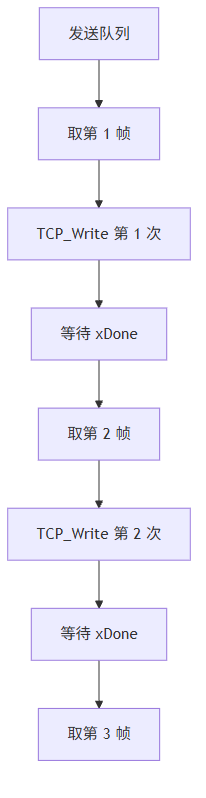
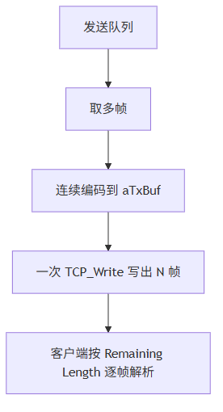

这一篇讲真实性能优化。早期 PLC Broker 在高频小消息场景下出现 1~3 秒尾部延迟，根因不是 QoS2、Retain 或订阅匹配，而是一次 TCP_Write 只写一帧。优化方向是批量编码多个 MQTT 帧，并在一次 TCP 写出中发送。
适合谁收藏
- PLC Broker 消息转发延迟明显的人
- 想理解 MQTT over TCP 粘包是否安全的人
- 正在调
cnMaxFramesPerConnectionScan的人 - 想把 Broker 从能用优化到流畅的人
这次问题不是“不能用”。
而是：
能连、能订阅、能发布，但两个客户端连续互发时，消息明显比 EMQX 慢，尾部还有 1~3 秒延迟。
先给结论：
根因不在订阅匹配，也不在 Retain，更不在 QoS2。 真正瓶颈是发送侧一次 TCP_Write 只写一个 MQTT 帧，小消息被拆成太多 TCP 写事务。
这次优化目标是让 PLC 侧轻量 Broker 在小规模高频小消息场景下足够流畅，不是把 PLC 推向通用服务器的极限吞吐路线。
一、先看测试现象
测试环境：
| 项目 | 内容 |
|---|---|
| PLC | 192.168.20.100 |
| Broker | PLC 内置 MqttBroker |
| 客户端 | MQTTBox + 通信猫 |
| 主题 | CodeSys |
| 动作 | 两个客户端都订阅，同一时间连续发布小消息 |
EMQX 对照组里，消息基本几十毫秒内回到订阅端。
早期 PLC Broker 里，现象是：
| 现象 | 判断 |
|---|---|
| 前几条能到 | 路由主链路是通的 |
| 尾部消息慢 | 发送出口有堆积 |
| MQTTBox 后发消息插到前面 | 目标连接队列顺序和写出节奏有问题 |
uiDeliveryQueueCount 不长期堆积 | 不是纯队列容量不足 |
这类问题最怕凭感觉优化。
先看诊断变量。
二、关键诊断变量
| 变量 | 含义 | 怎么判断 |
|---|---|---|
uiLastTxFrameCount | 最近一次 TCP 写出包含多少 MQTT 帧 | 长期为 1，说明没有批量写出 |
uiLastTxBytes | 最近一次 TCP 写出字节数 | 小消息场景下应随批量帧数上升 |
uiDeliveryQueueCount | 普通投递队列当前水位 | 长期不为 0 说明出口跟不上 |
uiProtocolQueueCount | 协议响应队列水位 | 如果堆积，ACK 类响应被拖慢 |
uiMaxDeliveryQueueCountSeen | 历史最高投递水位 | 判断是否出现瞬时堆积 |
用户现场反馈：
aSnapshots[x].uiLastTxFrameCount 两个客户端都是 1 或 2 为主
uiDeliveryQueueCount 一直为 0
cnMaxFramesPerConnectionScan 从 4 提到 8，确实有效果这说明：
- 入站扫描预算会影响实时性。
- 出站批量写已经有改善，但仍要控制上限。
- 队列没有长期堵死，更多是写事务粒度和调度节奏问题。
三、一帧一写为什么慢
早期发送路径：

小消息本身只有十几字节。 但每一帧都要单独走一次 TCP_Write 状态。
在 PLC 周期任务里，这会被放大：
| 成本 | 来源 |
|---|---|
| 扫描周期成本 | 每次写都要跨周期观察状态 |
| NBS 写完成节拍 | xDone 不一定同周期回来 |
| 客户端 ACK 节拍 | QoS 或协议响应会插入 |
| 多连接轮询 | 每个 Slot 都要被调度 |
最后尾部消息就慢了。
四、MQTT over TCP 允许粘包
很多人会担心：
多个 MQTT 报文放在一次 TCP_Write 里，客户端能不能识别？
可以。
MQTT 跑在 TCP 流上，接收方本来就应该按 Fixed Header + Remaining Length 一帧一帧解析。
一次 TCP 写出：
[PUBLISH 帧][PUBLISH 帧][PUBACK 帧][PINGRESP 帧]对 MQTT 来说完全合法。
优化后的路径：

五、批量写出不是无限合并
工业 PLC 里不能为了性能把一个周期吃满。
当前采用固定预算：
| 常量 | 默认值 | 作用 |
|---|---|---|
cnMaxFramesPerConnectionScan | 8 | 每连接每周期最多处理入站 MQTT 帧 |
cnMaxTxFramesPerWrite | 8 | 单次 TCP_Write 最多合并写出 MQTT 帧 |
cnMinTxBufferFree | 64 | 发送缓冲保留安全余量 |
为什么不是越大越好？
| 参数过大 | 风险 |
|---|---|
| 入站帧预算过大 | 单个高频客户端占用太多 PLC 周期 |
| 批量写帧数过大 | 脆弱客户端工具可能承压崩溃 |
| 发送缓冲逼满 | 容易出现边界错误 |
实际测试中，8 是一个比较稳的折中。
六、顺序问题：别让新消息插队
早期还出现过一个现象：
前一批 Tongxinmao 消息还没发完，后发的 mqttbox 消息先到了。
其中一个原因是普通投递队列按“第一个空位”入队，而发送按低索引扫描。
如果低位旧消息发走了，高位旧消息还没发，新消息插到低位，就会造成顺序错觉。
修复策略：
| 问题 | 方案 |
|---|---|
| 队列低位空洞 | 入队改为队尾追加 |
| 尾部到数组上限 | 执行稳定紧凑 |
| 同一连接顺序 | 尽量保持 FIFO |
这不是为了做互联网消息队列，而是为了让现场观感稳定。
七、ST 代码入口
| 代码入口 | 作用 |
|---|---|
FB_MqttBrokerConnection.M_PrepareNextTx | 从协议队列和投递队列取多帧，批量编码 |
FB_MqttBrokerCodec.M_BuildSimpleAck | 支持偏移写入 ACK 帧 |
FB_MqttBrokerCodec.M_BuildPublish | 支持偏移写入 PUBLISH 帧 |
GVL_MqttBroker | 固化批量写和入站扫描预算 |
ST_MqttBrokerConnectionSnapshot | 暴露 uiLastTxFrameCount 等性能诊断 |
批量组包的核心像这样：
uiWriteOffset := 0;
uiFrameCount := 0;
WHILE uiFrameCount < GVL_MqttBroker.cnMaxTxFramesPerWrite DO
xBuilt := M_BuildNextFrame(
uiWriteOffset := uiWriteOffset,
uiFrameLen => uiFrameLen);
IF NOT xBuilt THEN
EXIT;
END_IF
uiWriteOffset := uiWriteOffset + uiFrameLen;
uiFrameCount := uiFrameCount + 1;
END_WHILE
uiTxLen := uiWriteOffset;
uiLastTxFrameCount := uiFrameCount;重点是：构包函数必须支持 uiWriteOffset，不能永远从 aBuffer[0] 写。
八、现场调参建议
| 场景 | 建议 |
|---|---|
| 两三个客户端，低频状态消息 | 默认参数即可 |
| 两客户端高频互发小消息 | cnMaxFramesPerConnectionScan = 8，cnMaxTxFramesPerWrite = 8 |
| 通信猫高频崩溃但 MQTTBox 正常 | 优先怀疑客户端工具承压，不要盲目继续放大 Broker 突发 |
| 队列水位长期不为 0 | 看发送侧是否被慢客户端拖住 |
uiLastTxFrameCount 长期为 1 | 批量写出没有真正生效 |
模型边界与验证路径
性能问题不能只看“感觉慢”。要先把链路拆成入站解析、路由入队、发送组包、TCP 写出和客户端处理五段。
| 判断 | 可信度 | 依据 | 验证路径 |
|---|---|---|---|
| 一帧一写会放大高频小消息尾部延迟 | high | 源码发送路径和现场对照测试 | 观察 uiLastTxFrameCount 长期是否为 1 |
| 批量 TCP 写出符合 MQTT over TCP 流模型 | high | MQTT Remaining Length 分帧机制 | 客户端连续接收多帧且不报协议错误 |
cnMaxFramesPerConnectionScan = 8 是当前现场有效参数 | medium | 用户当前 PLC + 两客户端测试 | 换 PLC、换任务周期、换客户端后需要复测 |
这里不建议直接追“越大越快”。PLC 里做服务器，性能优化不是把所有上限都拉满，而是看每个周期里谁在占时间、谁在排队、谁在等待 TCP 写完成。
九、这一篇你最该记住的 6 句话
- 高频小消息延迟未必是路由慢，更可能是发送写事务太碎。
- MQTT over TCP 允许多个 MQTT 控制报文连续写在同一个 TCP 流里。
- 批量编码 + TCP 粘包写出能显著降低尾部延迟。
- 批量上限不能无限放大，PLC 周期和客户端承压都要考虑。
uiLastTxFrameCount是判断批量写出是否生效的关键变量。- 队列顺序要按 FIFO 思路处理，避免新消息插到旧消息尾部之前。
下篇预告
下一篇做现场排障总收口。
我们会把连接不上、订阅失败、发布延迟、Retain 收不到、MQTT 5.0 连接失败这些问题全部整理成一张排障路线图。
完整 ST 代码
下面这段来自 FB_MqttBrokerConnection.M_PrepareNextTx.st。优化点非常明确：协议响应队列优先，并且在一个 TCP_Write 缓冲里尽量合并多个 MQTT 控制帧。
/// =======================================================================
/// 协议响应优先批量编码
/// =======================================================================
FOR uiIndex := 1 TO GVL_MqttBroker.cnProtocolQueueSize DO
IF xStopBatch THEN
EXIT;
END_IF
IF aProtocolQueue[uiIndex].xUsed THEN
IF uiBatchFrameCount >= GVL_MqttBroker.cnMaxTxFramesPerWrite THEN
xStopBatch := TRUE;
ELSIF (TO_UDINT(uiTxOffset) + TO_UDINT(GVL_MqttBroker.cnMinTxBufferFree)) >= SIZEOF(aTxBuf) THEN
xStopBatch := TRUE;
ELSIF fbCodec.M_BuildSimpleAck(
aBuffer := aTxBuf,
aReturnCodes := aProtocolQueue[uiIndex].aReturnCodes,
ePacketType := aProtocolQueue[uiIndex].ePacketType,
byProtocolLevel := stConnection.byProtocolLevel,
uiPacketId := aProtocolQueue[uiIndex].uiPacketId,
byReturnCode := aProtocolQueue[uiIndex].byReturnCode,
uiReturnCount := aProtocolQueue[uiIndex].uiReturnCount,
uiWriteOffset := uiTxOffset,
udiBufferSize := SIZEOF(aTxBuf),
uiFrameLen => uiBuiltLen) THEN
aProtocolQueue[uiIndex].xUsed := FALSE;
aProtocolQueue[uiIndex].ePacketType := E_MqttPacketType.byReserved;
aProtocolQueue[uiIndex].uiPacketId := 0;
aProtocolQueue[uiIndex].byReturnCode := 0;
aProtocolQueue[uiIndex].uiReturnCount := 0;
IF stConnection.uiProtocolQueueCount > 0 THEN
stConnection.uiProtocolQueueCount := stConnection.uiProtocolQueueCount - 1;
END_IF
uiTxOffset := uiTxOffset + uiBuiltLen;
uiBatchFrameCount := uiBatchFrameCount + 1;
END_IF
END_IF
END_FOR普通 PUBLISH 投递也走同一个批量缓冲；如果当前帧放不下，就先发送已经编码好的内容，下个周期继续，保持队列顺序不乱。
IF fbCodec.M_BuildPublish(
aBuffer := aTxBuf,
stPublish := stDelivery,
byProtocolLevel := stConnection.byProtocolLevel,
uiWriteOffset := uiTxOffset,
udiBufferSize := SIZEOF(aTxBuf),
uiFrameLen => uiBuiltLen) THEN
aDeliveryQueue[uiIndex].xValid := FALSE;
IF stConnection.uiDeliveryQueueCount > 0 THEN
stConnection.uiDeliveryQueueCount := stConnection.uiDeliveryQueueCount - 1;
END_IF
uiTxOffset := uiTxOffset + uiBuiltLen;
uiBatchFrameCount := uiBatchFrameCount + 1;
ELSIF uiBatchFrameCount > 0 THEN
// 当前 PUBLISH 放不进本批次剩余缓冲时，先发已编码内容，保持队列顺序不变。
xStopBatch := TRUE;
END_IF真正发起 TCP_Write 前，会把本次批量帧数和字节数留成在线可观察变量。现场调延迟时，这几个量比“感觉快了/慢了”靠谱得多。
IF uiBatchFrameCount > 0 THEN
stConnection.uiTxLength := uiTxOffset;
uiLastTxFrameCount := uiBatchFrameCount;
uiLastTxBytes := uiTxOffset;
IF udiTxBatchCount < UDINT#16#FFFFFFFF THEN
udiTxBatchCount := udiTxBatchCount + 1;
END_IF
IF (UDINT#16#FFFFFFFF - udiTxFrameCount) >= TO_UDINT(uiBatchFrameCount) THEN
udiTxFrameCount := udiTxFrameCount + TO_UDINT(uiBatchFrameCount);
ELSE
udiTxFrameCount := UDINT#16#FFFFFFFF;
END_IF
bTcpWriteExecute := TRUE;
bWriteBusy := TRUE;
M_PrepareNextTx := TRUE;
END_IF系列导航
- 系列定位：第 7 篇
- 上一篇：Retain、Will、KeepAlive：工业现场为什么不能只会转发 PUBLISH
- 下一篇：PLC 侧 MQTT Broker 现场排障：连不上、订阅失败、发布延迟、Retain 收不到该怎么查
评论区预留
这里先保留评论和回复结构，不接入第三方服务。后续统一决定登录、匿名、审核、反垃圾和静态站兼容策略。